↗Vue d’ensemble
Le travail est organisé en trois niveaux : la fiche de mission du client, les tâches de préparation, puis les sous-tâches qui sont démarrées et traitées par les équipes.
- PréparerCréer ou retrouver la fiche de mission du client.
- PlanifierCréer les tâches et définir leur checklist et les responsables.
- LancerCréer les sous-tâches et démarrer celles qui peuvent être traitées.
- RéaliserPrendre les tâches dans « Mes tâches », traiter les étapes, échanger et déposer les rapports.
1Ouvrir la fiche de mission du client
- Depuis Fiches de Mission, créez une fiche correspondant à la mission à réaliser pour le client.
- Dans la liste, sélectionnez la fiche concernée.
- Cliquez sur Détails pour ouvrir son espace de gestion.
- Choisissez l’onglet Démarrage des tâches, puis le type de mission à préparer (par exemple Migration technique ou Migration comptable).
- Dans la mission, ouvrez l’onglet Gestion de tâches.
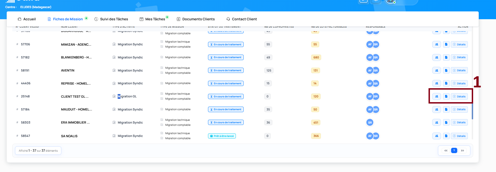
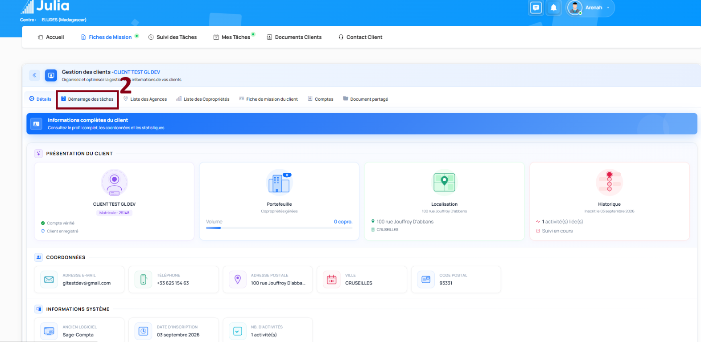
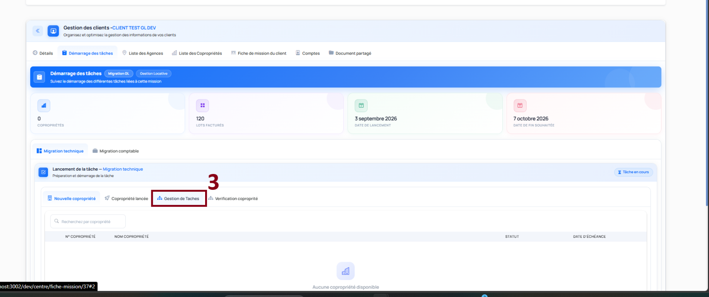
2Créer une tâche
Dans Gestion de tâches, cliquez sur Créer une tâche. Saisissez un titre (obligatoire, de 3 à 200 caractères et contenant au moins une lettre) et, si nécessaire, une description.
Choisir les éléments de checklist
La liste prédéfinie est facultative lors de la création d’une tâche. Vous pouvez choisir des éléments existants, ajouter des lignes personnalisées et attribuer un niveau responsable à chaque ligne sélectionnée. L’ordre des lignes définit les priorités.
- Au moins un élément sélectionné : la tâche est créée avec sa checklist et la sous-tâche initiale associée reprend le titre de la tâche.
- Aucun élément sélectionné : la tâche est créée sans sous-tâche initiale. Vous pourrez ensuite créer ses sous-tâches depuis la liste.
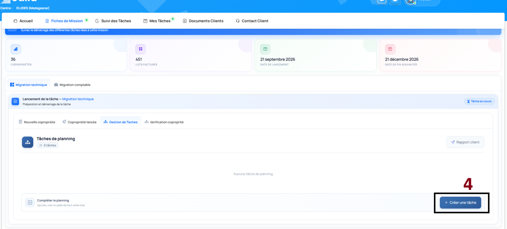
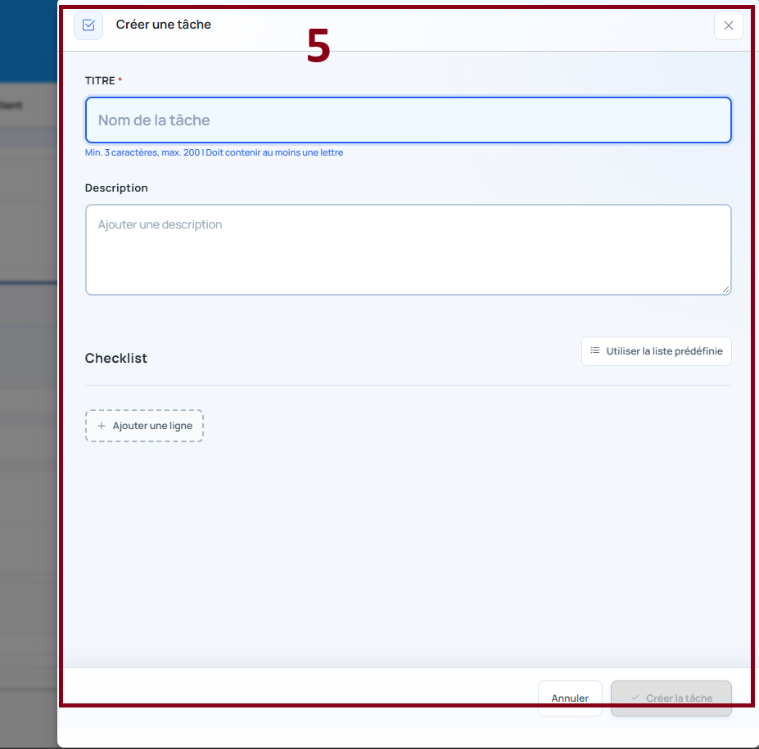
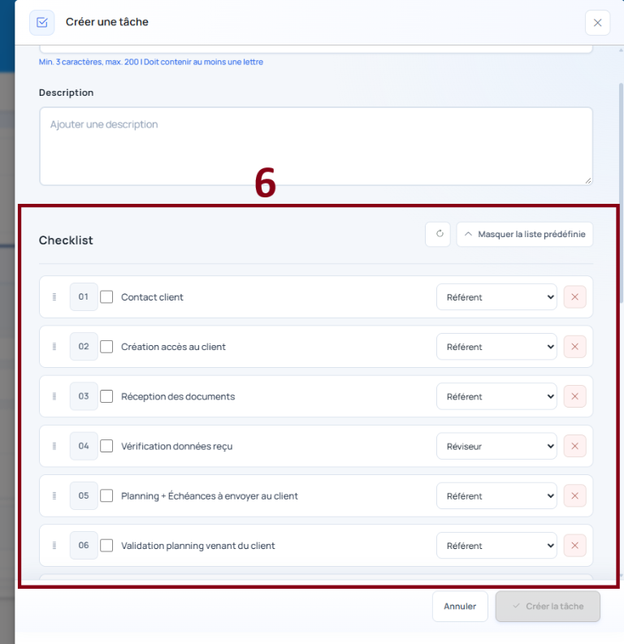
3Créer une sous-tâche
Dans la tâche concernée, utilisez l’action permettant d’ajouter une sous-tâche. Choisissez le mode de création adapté à la mission.
| Mission | Modes disponibles | À savoir |
|---|---|---|
| Syndic avec copropriétés | Création manuelle ou à partir des copropriétés | Vous pouvez sélectionner une ou plusieurs copropriétés déjà rattachées à la mission. La création peut être faite en une fois pour toutes les copropriétés, avec possibilité d’exclure certaines d’entre elles. |
| Gestion locative | Création manuelle | Une sous-tâche est créée manuellement, sans sélection de copropriété. |
En création manuelle, indiquez le titre et, si besoin, une description. Vous pouvez également ajouter une dépendance et une date d’échéance. Sélectionnez ensuite les éléments de checklist et leur niveau responsable.
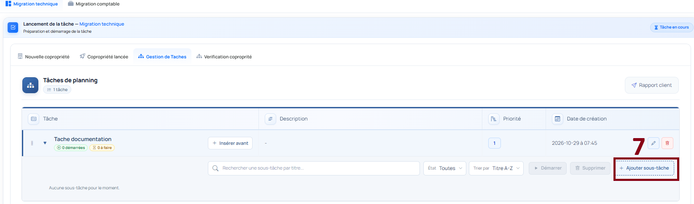
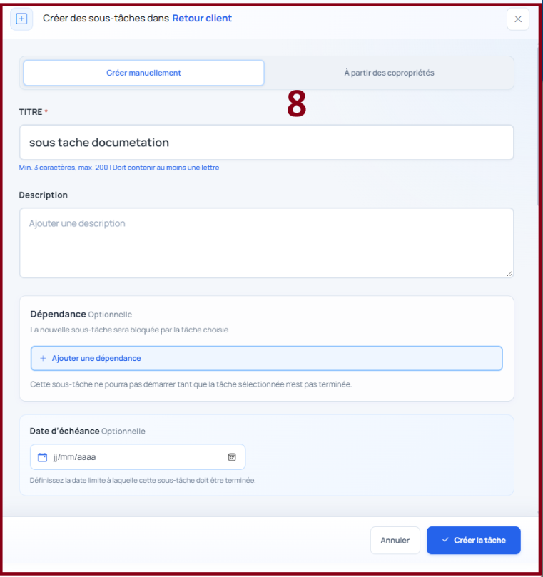
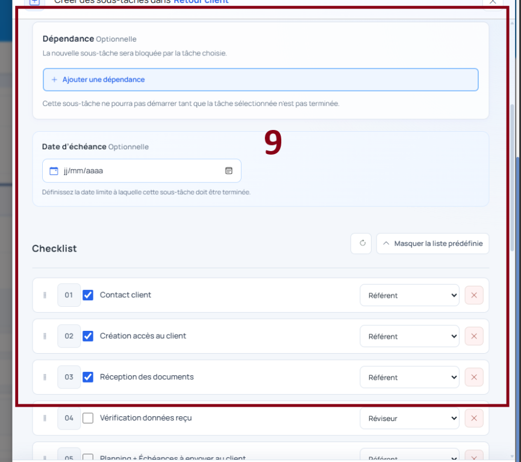
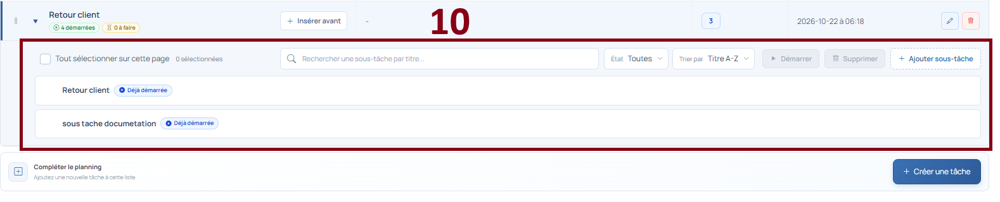
4Démarrer les sous-tâches
- Retrouvez la sous-tâche dans la liste de la tâche parente.
- Sélectionnez une ou plusieurs sous-tâches qui peuvent commencer.
- Cliquez sur Démarrer et confirmez l’action si nécessaire.
- Vérifiez que la ligne affiche son statut de démarrage.
Le démarrage déclenche la mise à disposition des éléments de checklist auprès des utilisateurs correspondant aux niveaux responsables sélectionnés. Les sous-tâches peuvent être filtrées par état pour retrouver celles qui sont démarrées ou non démarrées.
5Prendre et traiter les tâches
- Ouvrez Mes tâches, puis l’onglet Nouvelle tâche.
- Repérez les tâches qui vous sont destinées et utilisez l’action Prendre / Assigner selon votre rôle et les droits disponibles.
- Après prise en charge, retrouvez le travail dans l’onglet correspondant à son état : Tâches à faire, Tâches en cours ou Tâches à reprendre.
- Sur la ligne concernée, cliquez sur l’icône d’affichage pour ouvrir le détail de la sous-tâche et sa checklist.
| Onglet | Usage |
|---|---|
| Nouvelle tâche | Éléments nouvellement mis à disposition et à prendre en charge. |
| Tâches à faire | Travail à réaliser. |
| Tâches en cours | Travail déjà engagé. |
| Tâches à reprendre | Travail qui doit être repris ou poursuivi selon son état. |
| Tâches en suspens | Travail bloqué ou suspendu. |
| Tâches terminées | Travail achevé. |
Respecter l’ordre de priorité
Les éléments de checklist sont numérotés selon leur priorité. Traitez-les dans l’ordre : une étape ultérieure peut rester en lecture seule jusqu’à la fin de l’étape précédente. Selon les droits affichés, vous pouvez terminer ou bloquer l’étape en cours.
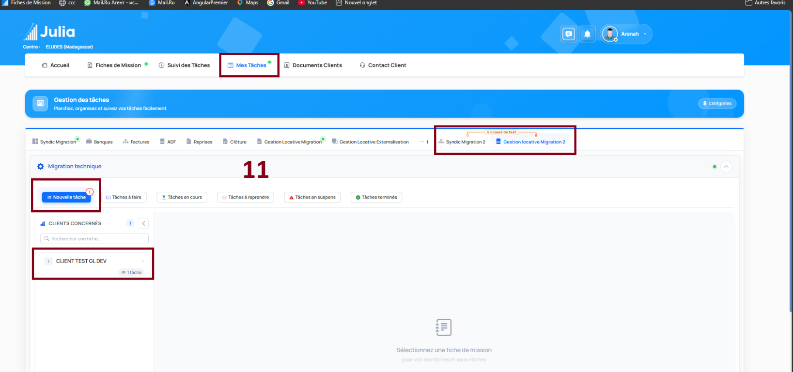
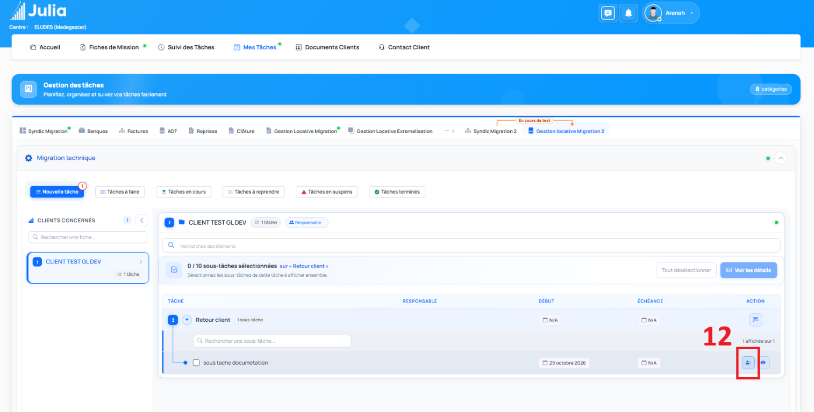
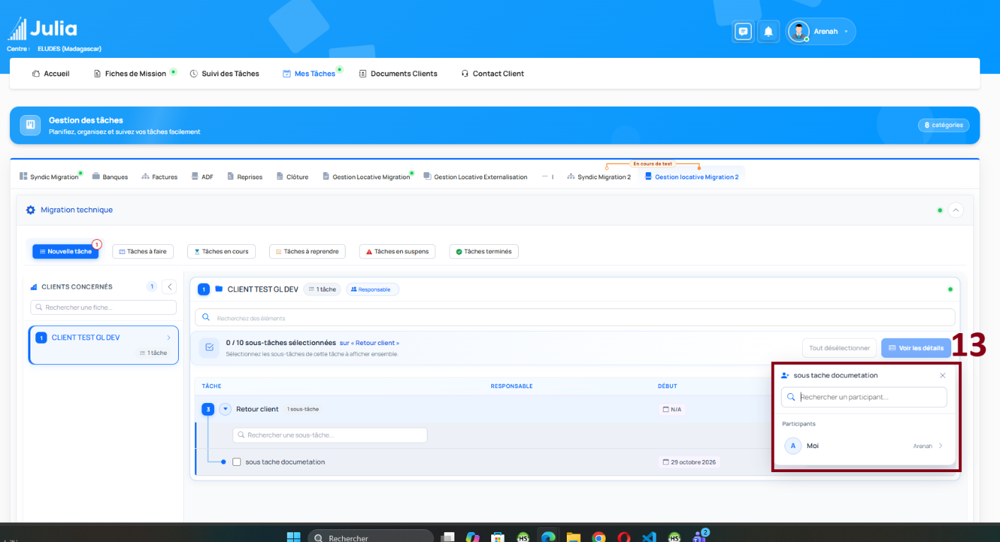
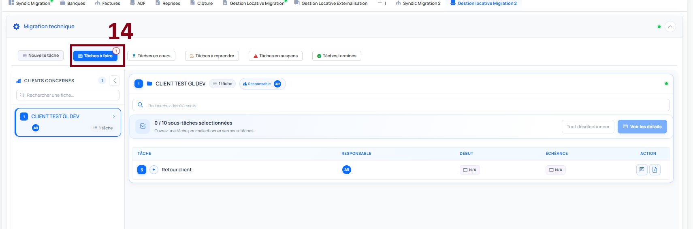
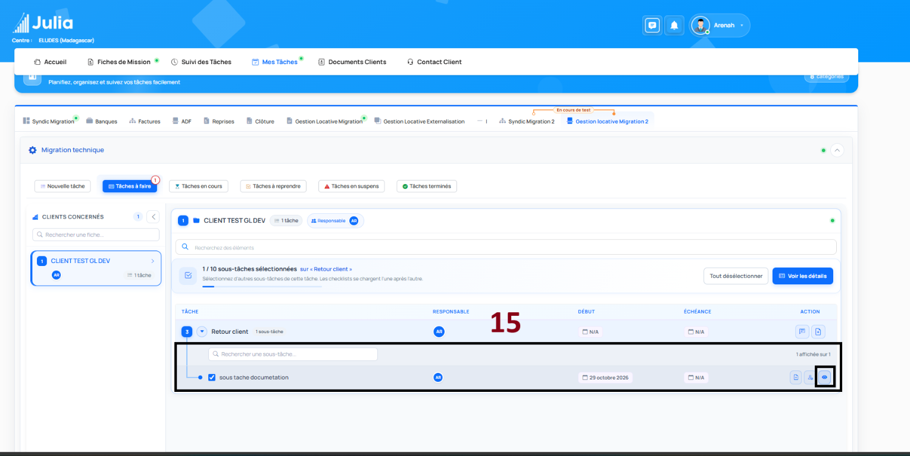
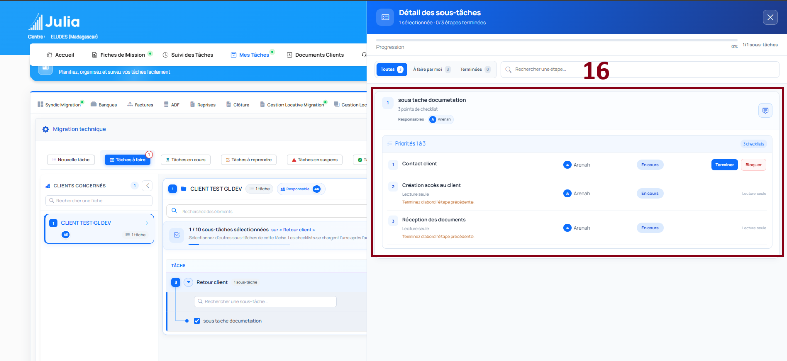
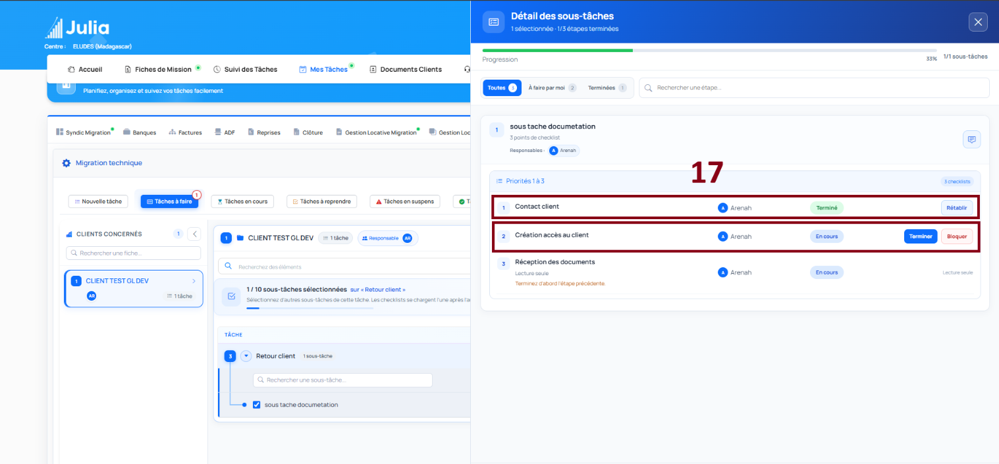
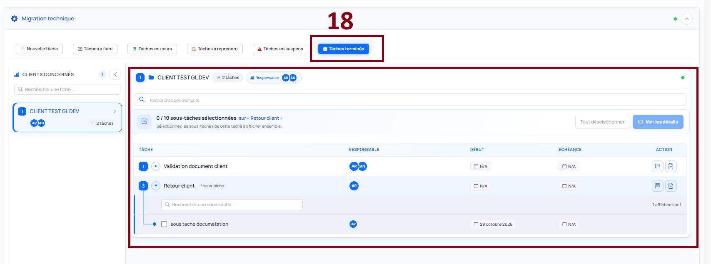
6Commentaires et échanges
Les commentaires permettent de partager une remarque, une question ou un blocage avec les participants de la tâche ou de la sous-tâche.
- Les événements liés au cycle de travail (par exemple démarrage, validation ou blocage) sont ajoutés à l’historique.
- Les participants peuvent ajouter des commentaires manuels et joindre des fichiers.
- Vous pouvez mentionner une ou plusieurs sous-tâches dans un commentaire afin de préciser le sujet concerné.
- Les échanges sont associés à la tâche ou à la sous-tâche afin que les participants concernés puissent les retrouver.
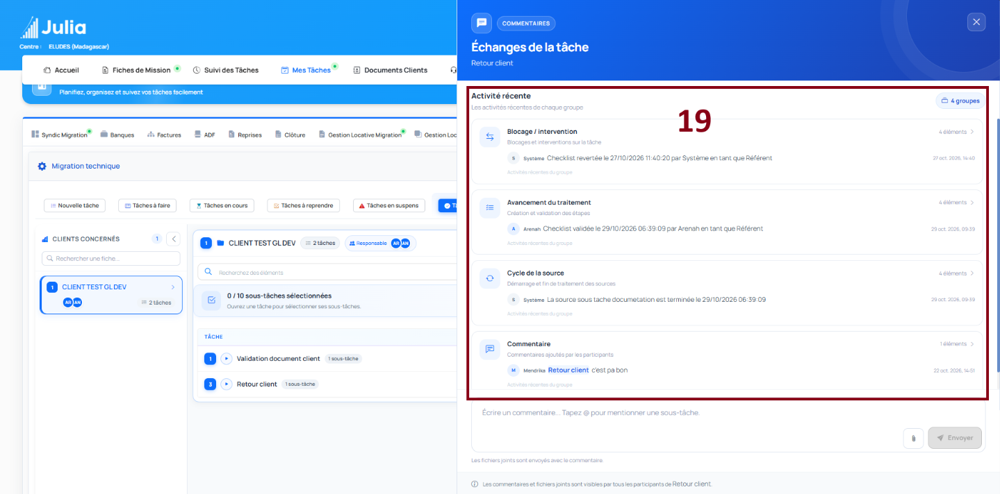
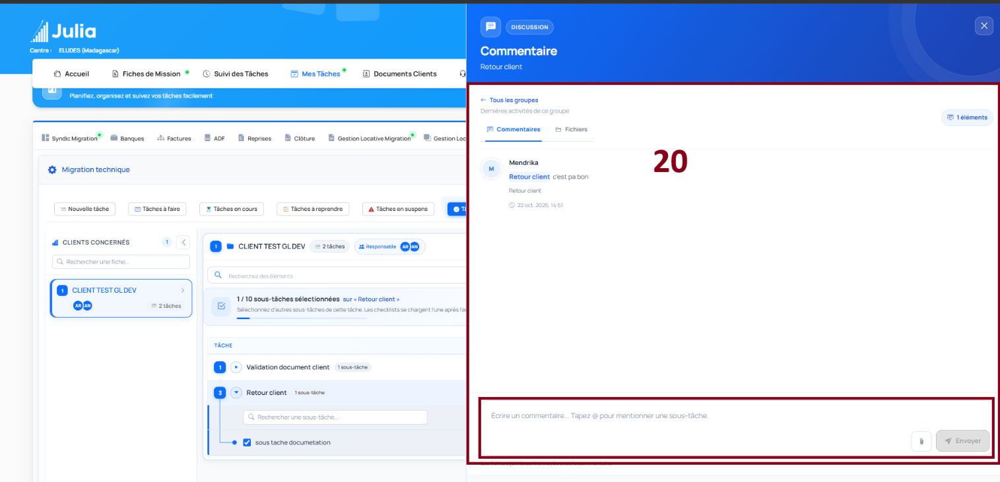
7Déposer et consulter les rapports
Les participants peuvent joindre des fichiers et rédiger un rapport depuis l’espace de traitement prévu pour la tâche. Les rapports sont associés au travail concerné et apparaissent dans son historique.
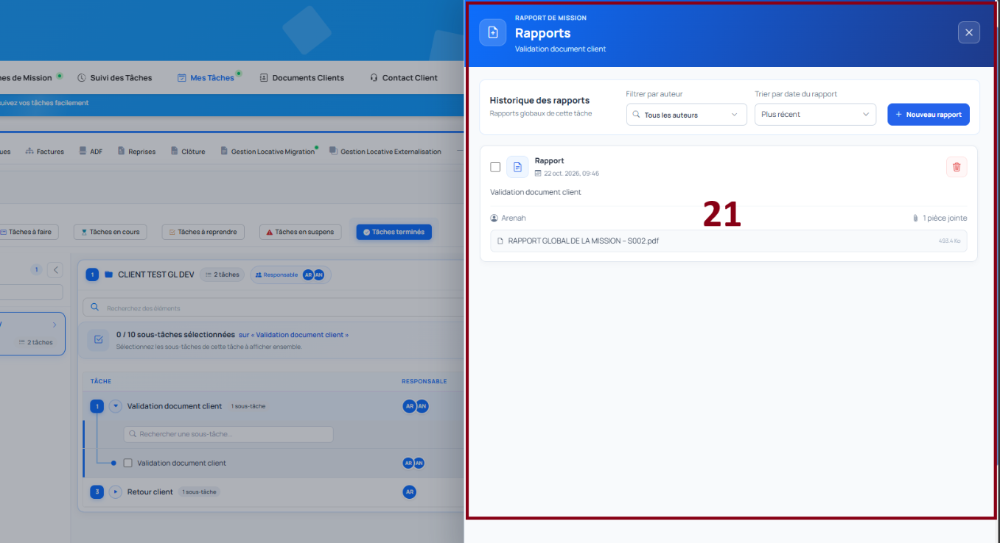
✓Récapitulatif des règles
- Une fiche de mission client est le point de départ du parcours.
- La checklist est facultative à la création d’une tâche ; si elle est renseignée, affectez les éléments à un niveau responsable.
- Une sous-tâche nécessite au moins un élément de checklist sélectionné et un responsable pour chaque élément retenu.
- Pour le syndic, une sous-tâche peut être créée manuellement ou à partir des copropriétés disponibles ; en gestion locative, elle est créée manuellement.
- Après démarrage, les éléments sont transmis aux utilisateurs correspondant aux responsables choisis.
- Les étapes de checklist se traitent dans l’ordre de priorité.
- Les commentaires, mentions, fichiers et rapports facilitent le suivi partagé, dans le respect des droits d’accès.
Cliquez sur une capture pour l’agrandir et naviguer entre les images. Le fichier HTML et les 21 images se trouvent ensemble dans ce dossier : vous pouvez déplacer ou copier tout le dossier sans séparer ses fichiers.